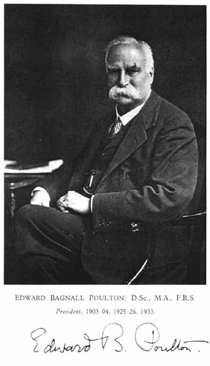

Edward Bagnall Poulton

Entomologist and Darwinian, friend of Wallace's.
"
The Colours of Animals" (1890)
; invented the term "aposematism". Realized that selection on camouflage would stabilize polymorphism -- first recognition of frequency-dependent selection.
Presidential address to the Entomological Society of London, Jan 1904: "What is a species?" (published in Proc. Ent. Soc. Lond. 1903 (1904)). Suggested that interbreeding ("syngamy") was the true nature of species. Invented the term "sympatric". See also "
Poulton, Wallace and Jordan: how discoveries in
Papilio
butterflies initiated a new species concept 100 years ago
"
"Essays on Evolution" (1908).
Published many papers on mimicry and evolution well into the 1930s.
Back to
Portraits
Back to
Jim Mallet Home Page